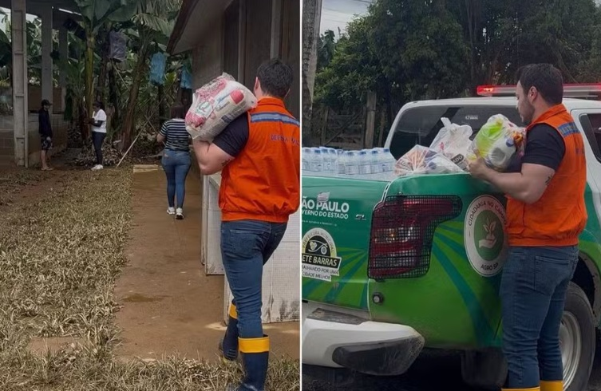

Campanhas Sociais
As iniciativas de ajuda social da baixada santista mais recentes

Crianças
Arrecadação de Brinquedos em Santos
Fundo Social de Santos (Av. Conselheiro Nébias, 388) recebe doações de brinquedos novos ou em ótimo estado até 7 de outubro, de segunda a sexta, das 9h às 17h, para mais de 100 entidades que atendem crianças na cidade.
Leia mais ->Vacinação
Hotel de Santos participa de campanha de multivacinação
Ação neste sábado (19), das 9h às 13h, no Comfort Santos Hotel, em frente à Rua Thiago Tacão — parceria com a Secretaria Municipal de Saúde de Santos atende crianças, jovens, adultos e idosos com vacinas do Calendário Nacional, mediante documento com foto..
Leia mais ->
Emergências Climáticas
Fundo social mobiliza pessoas para arrecadação para famílias no vale do ribeira
Fundo Social de Santos (Av. Conselheiro Nébias, 388, Encruzilhada) arrecada até sexta (18), das 9h às 18h, alimentos, água, fraldas, itens de higiene e ração para famílias desabrigadas pelas enchentes do rio Ribeira de Iguape, que já deixaram centenas de desalojados em Eldorado, Registro, Sete Barras e Iguape.
Leia mais ->